The snake, part by part
The Pant Snake as it is printed now: the original snake shape coiled round a 1.3 m pedestrian crossing signal post, with a double wall, push-fit joints, a self-closing tail door and a hidden fill sensor. This edition wears the Liszt piano livery.
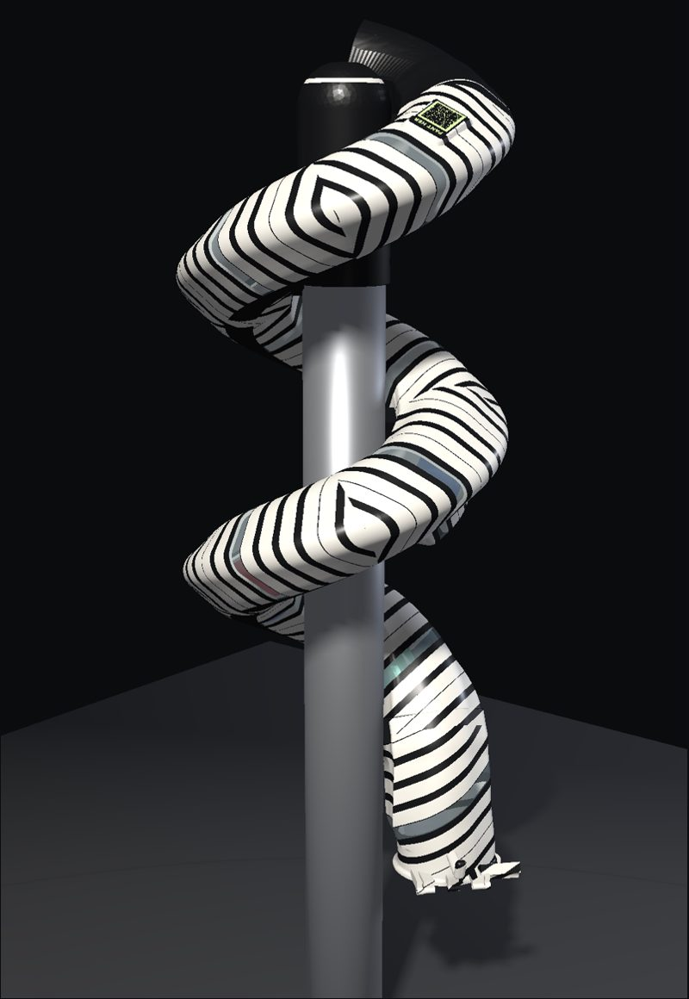
Day and night
The piano keyboard runs the whole length of the snake in horizontal bands, so every colour change happens at a fixed print height. One key on every piece is clear, so anyone can see how full the snake is. After dark the QR tile and its "PANT HER" writing glow green.
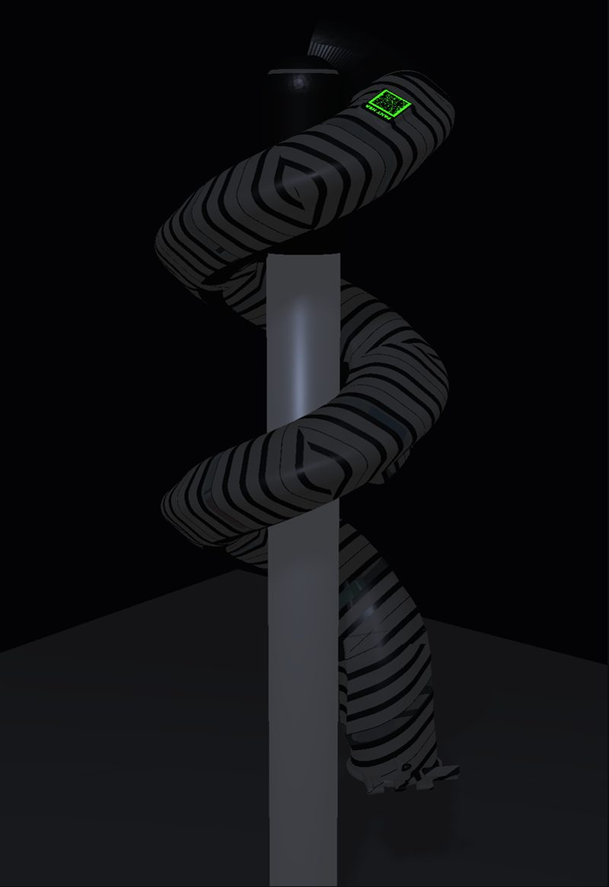
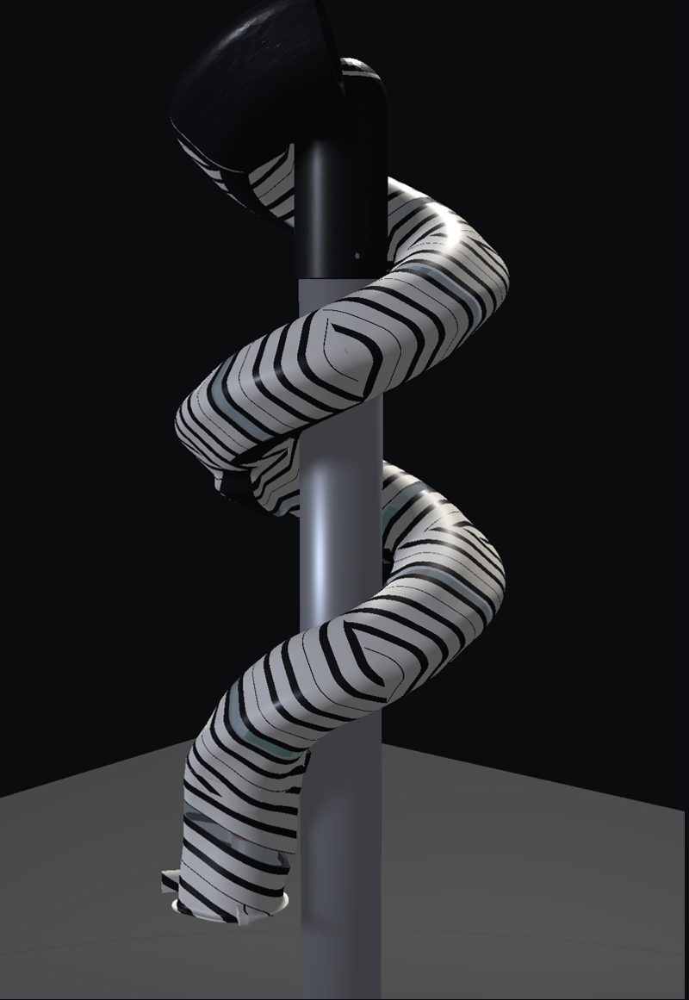
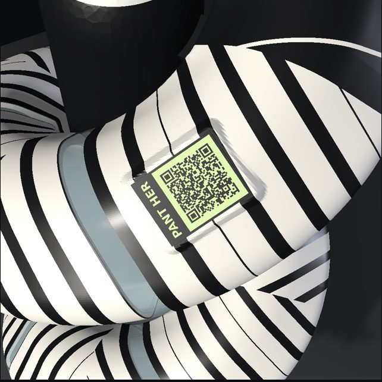
Built to last on the street
- Double wall. A 0.8 mm outer skin and a 0.8 mm inner skin with a 20% gyroid core between them: light, very stiff and practically unbreakable. The 120 mm bore is unchanged, so cans roll through as before.
- Push-fit joints. Each piece slides onto the next and clicks home on two rows of eight bumps. The teardrop shape only fits one way, and the bore has no step for a can to catch on.
- Self-closing tail door. Springs close it, a damper slows it and a latch holds it. A collector hangs a bag on the hook and the whole snake empties in minutes.
- Hidden sensor. Ten coils sit in a 2.75 mm channel along the belly under snap-in covers, with the radio pod on segment 3. See the sensor film.
- No drilling. Printed pads lined with rubber and stainless steel bands hold the snake on the post.
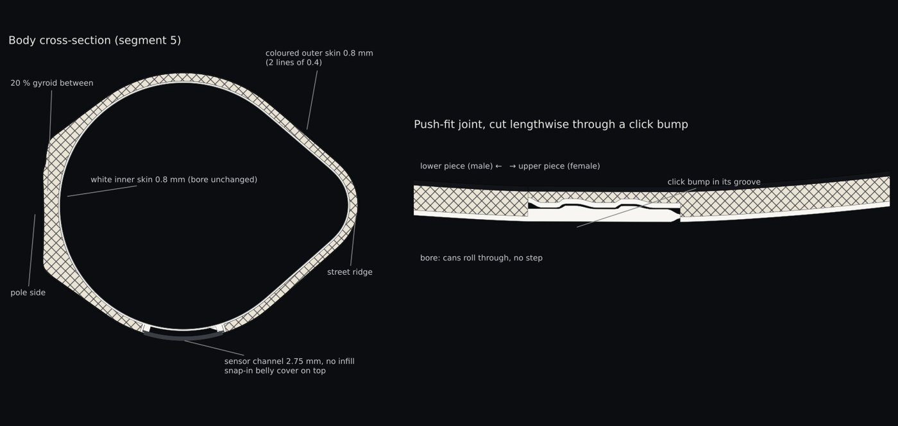
Colours and weight
Weights come from a full slice of all seven beds on the Prusa XL 5T profile, including supports and wipe towers. Test prints are in PETG. The pilot fleet prints in outdoor ASA, which is lighter: about 5.2 kg a snake.
| Tool | Filament | Used for | Per snake |
|---|---|---|---|
| T1 | White | White keys, inner skin, gyroid core | 3.69 kg |
| T2 | Black | Black keys, head, covers, door, pads, post-top sleeve | 2.21 kg |
| T3 | Glow green | QR field and writing only | 7 g |
| T4 | Transparent | One clear key per piece | 0.23 kg |
| Total, PETG | Including supports and wipe towers | 6.13 kg | |
| Pilot, outdoor ASA | Same parts in ASA (lower density) | ≈ 5.2 kg |
Seven print beds
Every piece fits the Prusa XL's 360 mm cube and stands on its flat joint face. PrusaSlicer estimates about 18.5 printer-days for one complete snake on one printer.
| Bed | On it | Weight |
|---|---|---|
| 1 | Tail + segment 1 + sensor cover | 999 g |
| 2 | Segments 2 and 3 + radio pod lid | 957 g |
| 3 | Segments 4 and 5 + sensor cover | 932 g |
| 4 | Segments 6 and 7 + sensor cover | 940 g |
| 5 | Tail tip with the spring door + door parts | 687 g |
| 6 | Head + post-top sleeve + door | 1,449 g |
| 7 | Sensor covers, 7 pole pads, QR tile | 170 g |
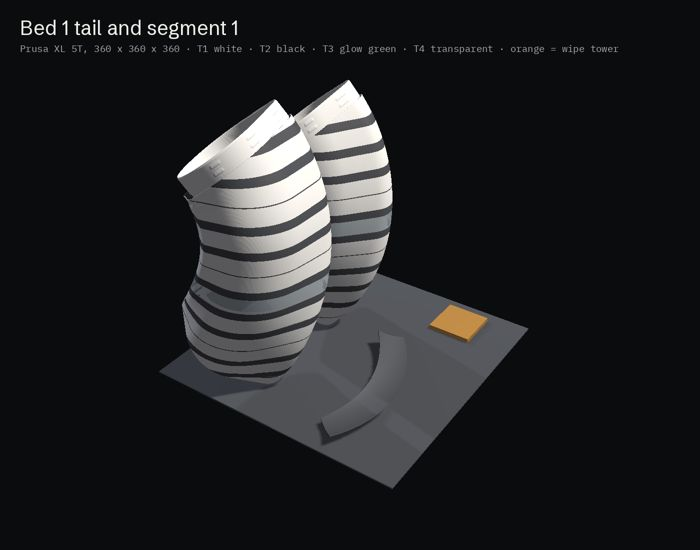
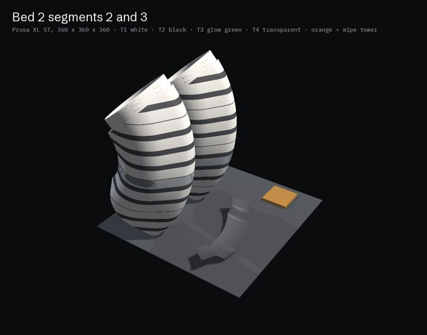
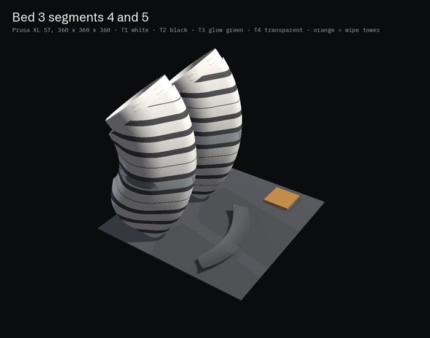
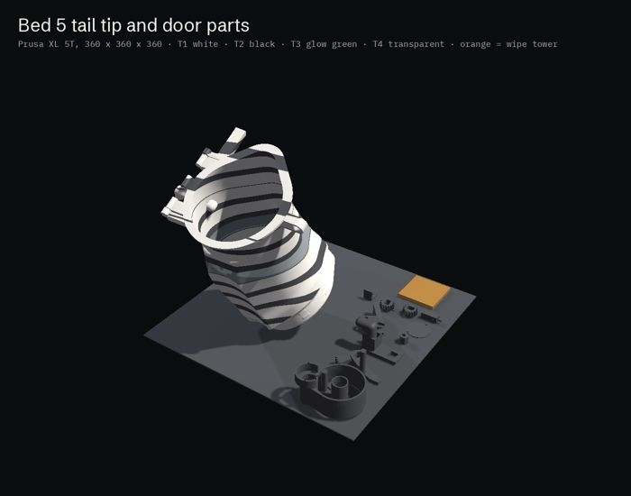
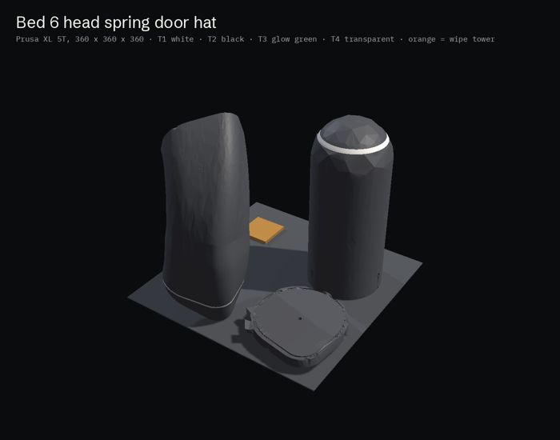
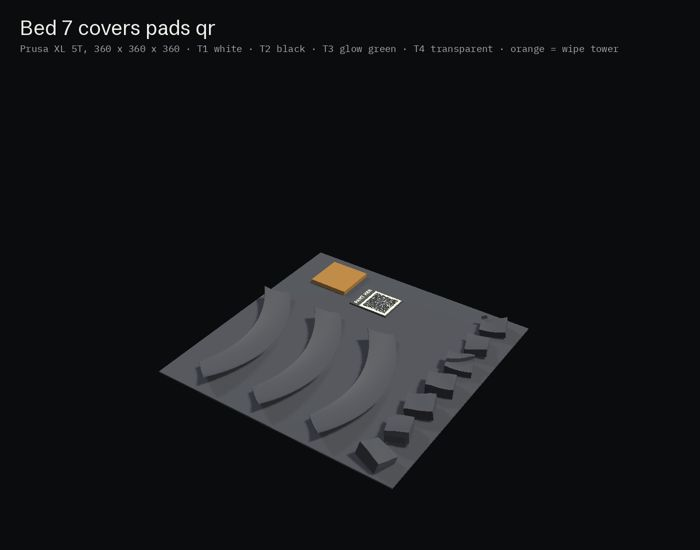
89 individual parts, each one an STL in print pose, plus ready project files for PrusaSlicer and OrcaSlicer. Print files are shared with partners on request. The earlier light-pole design study is kept for reference.